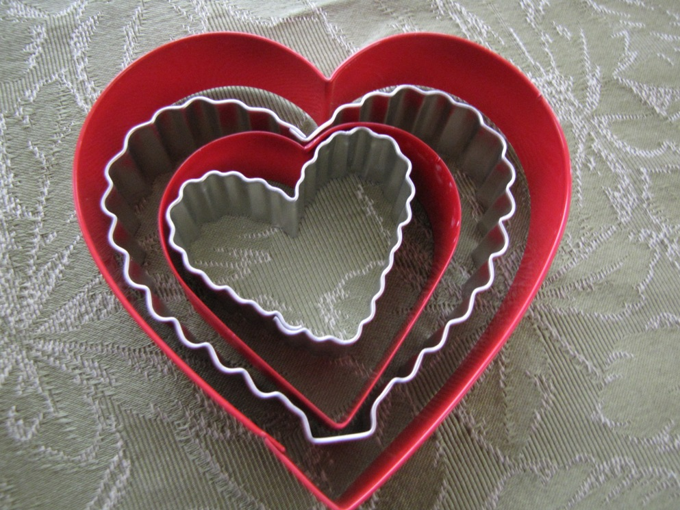

Are Margin, Border, and Padding confusing to you?
March 8th, 2015
When working with CSS, margin, padding and border are used in the visual layout of the content that you want to have in your webpage. Each HTML element is seen as a box surrounded by four boxes. Think of each boxing element as a stackable cookie cutter. In the inner or the smallest “cutter”, you have your content or element. The element can be anything from a text, paragraph, pictures, or media. The next “cutter” surrounding the content, is the padding. Padding is simply the space that you want to create between the content and the border. Most of us are familiar with borders. We probably use them on a daily basis to enhance our pictures on Facebook or Instagram. The border style properties are size, color and width, which enables us to changes the look of the border. And last but not least, the furthest outer parameter of the “cutter” is the margin. Margin is the space that is around the border. It is transparent, another words, it’s not seen but it’s “there” the same way that padding is.
The cookie cutter analogy represents what is known as the “box model” in CSS-based layout design. This boxing is important when determining the width and height of your content. When you want to figure out the size of your element, you need to take into account the value for padding, border, and margins all combined. Why is this important? When using the width property attribute in CSS, it’s referring to the width for the actual element, nothing else. Not the border, padding or anything else that you may choose to put. This will matter because depending on the browsers; this can affect how the content will appears on the webpage. Some browsers, the height on of the element includes the padding and border. So the best thing to do is to not think of your the element by it self. Think the element collective group when determining the total size of its “box”.
So let me give you an example. Let say, I have an area of my page of 400px that I want to fit a logo which will have margin, border and padding. I would need to subtract the border, margin and padding to get the width of the actual content that I need. I can play by subtracting pixels from border, or padding, but at the end, I want to make sure that total width including my borders is 400px.
So this is how I would do that.
div p {width: 200px; padding: 25px; border: 25px; margin: 25px;}
Total element width = width + left padding + right padding + left border + right border + left margin + right margin
200px (width)+ 50px (left + right padding)+ 50px (left + right border)+ 100px (left + right margin)= 400px
Notice that my width is not 400? It’s actually 200px in my example, because I had to take into account the margin, padding and border that I put. The content width becomes smaller to be able to keep my total width element to 400px.
I hope that help to clarify how each of these work and there functionality collectively when using them in your webpage design.